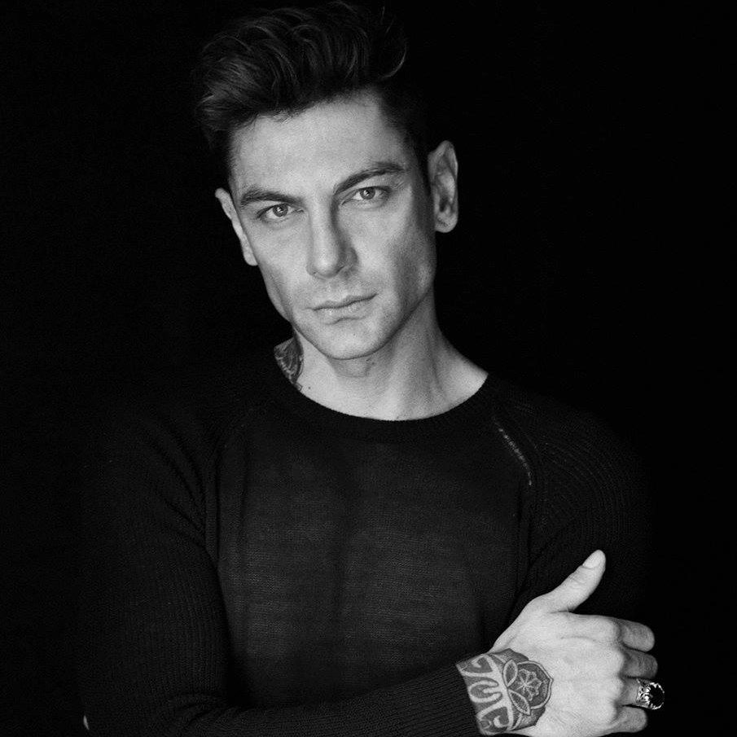

Mrvica was born in Šibenik, Croatia. He took piano lessons at the age of nine. [Three years later he gave his first concert performance of Haydn's Piano Concerto in C major. When war broke out in 1991, both Mrvica and his professor were determined that this would not disrupt his music studies. In spite of the war and surrounding turbulence, Mrvica entered in, and won, his first major competition in Zagreb in 1993.
Mrvica went on to study at the Music Academy in Zagreb where he spent five years under Professor Vladimir Krpan, who himself was a pupil of Arturo Benedetti Michelangeli. He then spent a year at the Franz Liszt Academy of Music in Budapest and during this year he won first prize at the Nikolai Rubinstein International Piano Competition. In 2000, he moved to Paris to study with Igor Lazko and gained first prize in the Pontoise Piano Competition in 2001.
Mrvica was spotted by Tonči Huljić, who composed several tracks for the crossover string quartet, Bond, and it was Tonči who put Mrvica in touch with British impresario Mel Bush. EMI Classics was also interested in Mrvica and soon a new album was underway. This album was The Piano Player, which gave a new spin to compositions by Handel and Chopin. Since its release in 2003 it has been successful, in Asia, where it has achieved Gold status in Singapore, Malaysia, Indonesia and China, Platinum in Taiwan and Croatia and Double Platinum in Hong Kong It was also in the number 1 slot in the HMV international pop chart in Hong Kong for twelve consecutive weeks.
Under Mel Bush's management, Mrvica's performances generally take place against a backdrop of special lighting, stage and video effects.
Mrvica's piece "Exodus" was used as the floor music of Russian artistic gymnast Anna Pavlova in the 2008 Beijing Olympics.